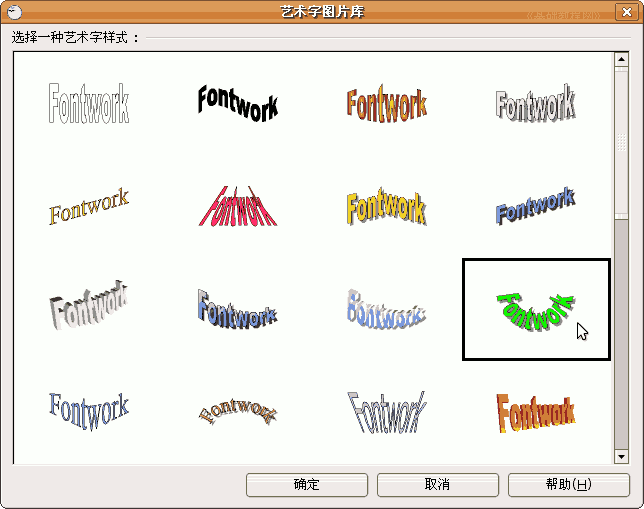

OpenOffice.org 教程之 Impress 演示文稿
作者：TeliuTe 来源：基础教程网
九、艺术字 返回目录 下一课在字体中可以设置一些常见的文字格式效果，还可以用插入艺术字的方法，设置出想图片一样的文字效果来，下面我们通过一个练习来学习操作；
1、插入艺术字
1）启动Impress，创建一个空白文档；
2）在下边绘图工具栏的右侧，找到一个“A”图标，这是“美工字体库”按钮；
3）点击这个按钮，出来一个样式面板，选择右边一个绿色的“Fontwork”，然后点下边的“确定”按钮；

4）这时候幻灯片里面就出来一个绿色弧形的“Fontwork”，上边出来一个“美工字体”小工具栏条；
5）瞄准绿色的文字“Fontwork”，鼠标变成手形时，双击鼠标左键，注意瞄准再双击，
在绿色文字中间出来一行黑色小字，同时还有一个插入点一闪一闪；
6）按退格键，删除里面的字母，然后输入“美丽的校园”，然后在旁边空白处点一下左键；
7）在旁边空白处点一下鼠标，文字就变成汉字，
重新选中文字，在上边的“美工字体”工具栏，第二个按钮点一下，选择“细上弯弧”样式；
调整好文字的位置大小，以“艺术字”为文件名，保存文件到自己的文件夹中；
本节学习了Impress基本操作，如果你成功地完成了练习，请继续学习下一课内容；
本教程由86团学校TeliuTe制作|著作权所有
基础教程网：http://teliute.org
美丽的校园……
转载和引用本站内容，请保留版权信息和本站链接。